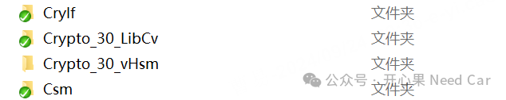

我们知道，HSM（Hardware Security Module）与Host实现通信的前提是打通IPC（Inter-processor communication）。所以，这也就是意味：Host和HSM两端都必须有对应的模块，否则，两者无法实现通信。但是，工程中，可能会面对这样的场景：Host端沿用之前购买的信息安全模块或者App购买了对应的模块，Bootloader没有购买，需要从App移植到Bootloader工程。那么，如何移植呢？移植以后如何让DavinciCfg识别呢？又需要做哪些操作才能让DavinciCfg生成对应模块的配置代码呢？本文，以移植Crypto_30_vHsm为例，聚焦驱动模块的移植安装和使用。1、Host需要用到的HSM模块
在Host端（Application或者Bootloader)，需要移植的模块包括如下四个，示意如下：

其他模块（eg：vSecPrim）包含在购买的SIP包中，不讨论。假设：Bootloader没有Crypto_30_vHsm驱动模块，也就意味着：Bootloader无法通过IPC使用HSM的服务。所以，需要从已有的工程中或者Application工程中移植Crypto_30_vHsm模块。